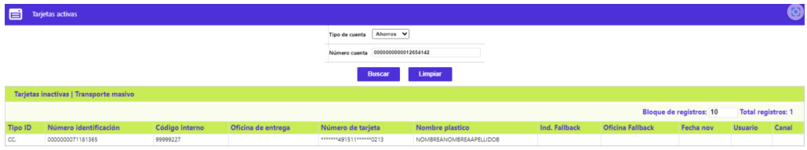
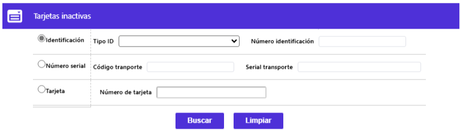
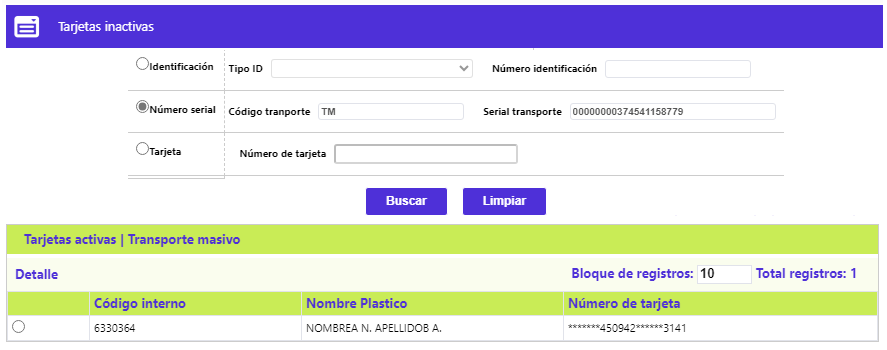
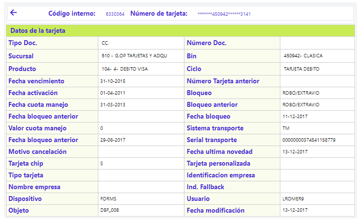
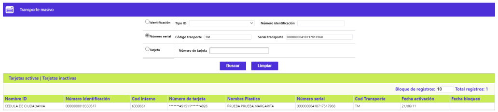

Consulta por cuentas tarjeta débito
Mediante este formulario se habilita la consulta, a partir de la relación de las cuentas de depósitos (Ahorros o Corriente) con las tarjetas débito dependientes de dichas cuentas. El formulario dispone de los enlaces Tarjetas inactivas y Transporte masivo.

Filtro: Luego de seleccionar el Tipo de cuenta e ingresar el número de la misma, al activar el botón Buscar, si los datos son consistentes, el sistema retorna la siguiente información:
|
Tipo ID |
Campo que muestra la sigla del tipo de documento de identificación del cliente titular de la tarjeta, a la que está asociada la cuenta de depósitos con la que se realiza la consulta. |
|
Número identificación |
Campo que muestra el número del documento de identificación del cliente titular de la tarjeta, a la que está asociada la cuenta de depósitos con la que se realiza la consulta. |
|
Código interno |
Campo que ilustra el código interno asociado a la tarjeta débito vinculada a la cuenta de depósitos con la que se realiza la consulta. |
|
Oficina de entrega |
Campo que contiene el código de la sucursal relacionada como de entrega del plástico de la tarjeta débito. |
|
Número de tarjeta |
Campo que ilustra el número de la tarjeta débito, enmascarado, vinculada la cuenta de depósitos con la que se realiza la consulta. |
|
Nombre plástico |
Campo que ilustra el nombre del cliente tal y como debe aparecer en el realce de la tarjeta débito. |
|
Ind. Fallback |
Campo que puede contener alguno de los siguientes valores: 1. Transacciones banda y chip 2. Transacciones solo chip |
|
Oficina Fallback |
Campo que muestra el dato de la oficina Cambio Fallback. |
|
Fecha nov |
Campo que en formato DD-MM-AAAA ilustra la fecha de la novedad Fallback. |
|
Usuario |
Campo que contiene el nombre del usuario responsable por el cambio Fallback. |
|
Canal |
Campo que identifica el canal a través del que se realizó el cambio Fallback. |
Tarjetas inactivas: Al activar ese enlace se despliega el siguiente formulario, en cuyo filtro se debe diligenciar algunos de sus campos con datos válidos para que el sistema retorne información en el bloque inferior, relacionada con las tarjetas inactivas.
Filtro: Los datos a utilizar como criterios en las dos primeras líneas o parejas de datos deben diligenciarse ambos. Al activarse el botón Buscar, el sistema retorna los datos ilustrados.

El formulario dispone de los enlaces: Tarjetas activas, Transporte masivo y Detalle.

|
Código interno |
Campo que ilustra el código interno asociado a la tarjeta débito, vinculada a la cuenta de depósitos, a la que corresponden los datos: Número serial y Serial transporte, para este caso, con los que se realiza la consulta. |
|
Nombre plástico |
Campo que ilustra el nombre del cliente tal y como debe aparecer en el realce de la tarjeta débito. |
|
Número de tarjeta |
Campo que ilustra el número de la tarjeta débito, enmascarado, vinculad a la cuenta de depósitos con la que se realiza la consulta. |
Detalle: Al invocar ese enlace se despliega el siguiente formulario en el que ninguno de sus datos es modificable:

Transporte masivo: Al activar ese enlace se despliega el siguiente formulario, en cuyo filtro se debe diligenciar algunos de sus campos con datos válidos para que el sistema retorne información en el bloque inferior, relacionada con la información de las tarjetas débito a las que se les habilita el uso como medio de pago en los sistemas de transporte masivo.
Filtro: Los datos a utilizar como criterios en las dos primeras líneas o parejas de datos deben diligenciarse ambos. Al activarse el botón Buscar, el sistema retorna los datos ilustrados.

|
Nombre ID |
Campo que muestra el nombre del tipo de documento de identificación del cliente titular de la tarjeta, a la que está asociada la cuenta de depósitos a la que corresponden los datos: Número serial y Serial transporte, para este caso, con los que se realiza la consulta. |
|
Número identificación |
Campo que muestra el número del documento de identificación del cliente titular de la tarjeta, a la que está asociada la cuenta de depósitos con la que se realiza la consulta. |
|
Cód interno |
Campo que ilustra el código interno asociado a la tarjeta débito vinculada a la cuenta de depósitos con la que se realiza la consulta. |
|
Número de tarjeta |
Campo que ilustra el número de la tarjeta débito, enmascarado, vinculada la cuenta de depósitos con la que se realiza la consulta. |
|
Nombre Plástico |
Campo que ilustra el nombre del cliente tal y como debe aparecer en el realce de la tarjeta débito. |
|
Número serial |
Campo que muestra el dato del serial único asignado por la entidad a cada tarjeta débito a la que se le habilita la funcionalidad de servir como medio de pago en los sistemas de transporte masivo. |
|
Cod Transporte |
Campo que muestra el dato del sistema de transporte en el que puede ser utilizada la tarjeta débito como medio de pago. |
|
Fecha activación |
Campo que muestra en formato AA/MM/DD, la fecha a partir de la cual se le habilitó a la tarjeta débito, la funcionalidad de servir como medio de pago en uno de los sistemas de transporte masivo. |
|
Fecha bloqueo |
Campo que muestra en formato AA/MM/DD, la fecha en la cual se bloqueó la tarjeta débito, usualmente por no haberse podido realizar el cargo por el valor de las utilizaciones en el sistemas de transporte masivo. |